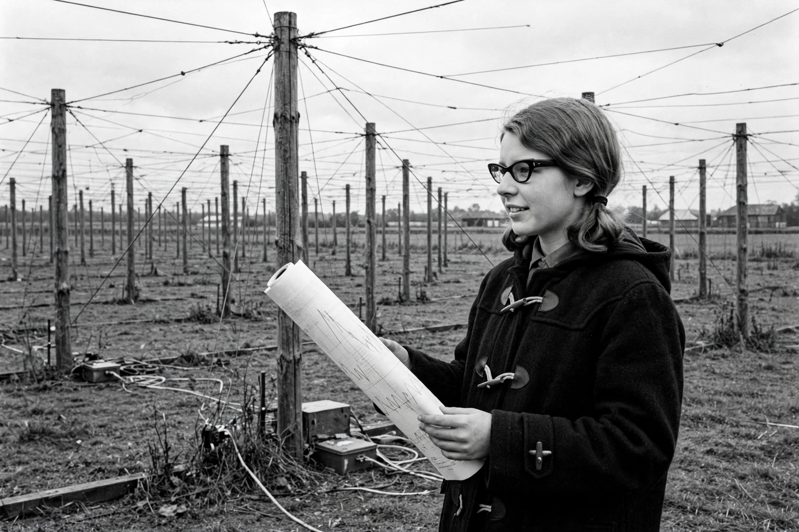

Jocelyn Bell Burnell
| Born | 15 July 1943, Lurgan, Northern Ireland |
|---|---|
| Known for | Discovery of pulsars (1967) |
| Awards | Special Breakthrough Prize in Fundamental Physics (2018) |

[Image: Photograph of Jocelyn Bell Burnell as a young researcher beside the Cambridge radio telescope array]Dame Susan Jocelyn Bell Burnell (born 15 July 1943) is a Northern Irish physicist who, as a postgraduate student, discovered the first radio pulsars in 1967 — one of the most significant astronomical discoveries of the twentieth century. The 1974 Nobel Prize in Physics for the discovery went to her supervisor Antony Hewish (with Martin Ryle), an omission that drew widespread criticism; she herself has consistently been gracious about it.
She later worked across the electromagnetic spectrum — gamma-ray, X-ray and millimetre astronomy — served as president of the Royal Astronomical Society and the Institute of Physics, and received the 2018 Special Breakthrough Prize (3 million US dollars), the whole of which she donated to fund scholarships for under-represented groups in physics.
Discovery of pulsars
Bell Burnell helped build the Interplanetary Scintillation Array at Cambridge — a 4.5-acre radio telescope of posts and wire — and operated it, analysing miles of chart paper output. In August 1967 she noticed a quarter-inch of 'scruff': a signal recurring every 1.337 seconds from a fixed point in the sky. Jokingly dubbed LGM-1 ('Little Green Men'), the source proved to be a rapidly rotating, magnetised neutron star sweeping a radio beam past Earth — a pulsar. The discovery paper (February 1968) listed her second among five authors; four pulsars were known within the year.
Career and advocacy
She earned her PhD in 1969 and held posts at Southampton, UCL, the Royal Observatory Edinburgh, the Open University and Oxford, managing the James Clerk Maxwell Telescope project and serving as Dean of Science at Bath. A leading Quaker voice in British science, she has campaigned for women and minorities in physics; the Bell Burnell Graduate Scholarship Fund, endowed with her Breakthrough Prize money, opened in 2019.